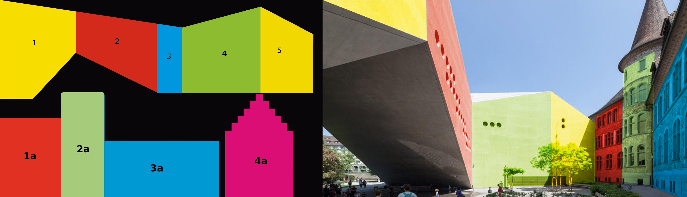
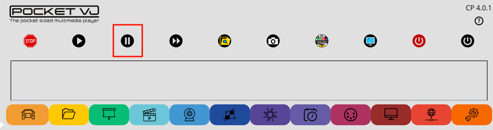
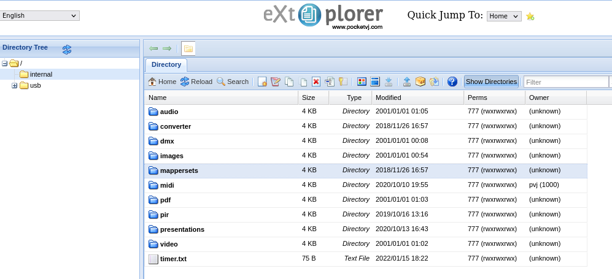
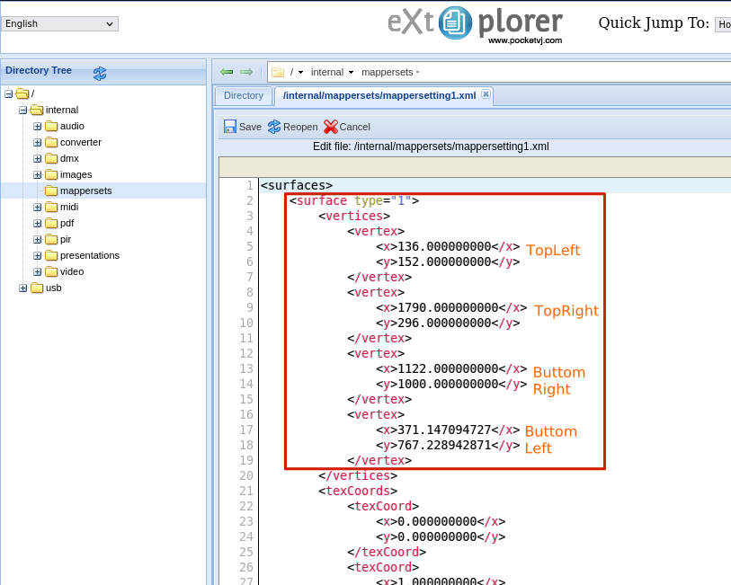
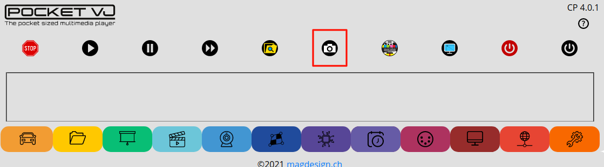
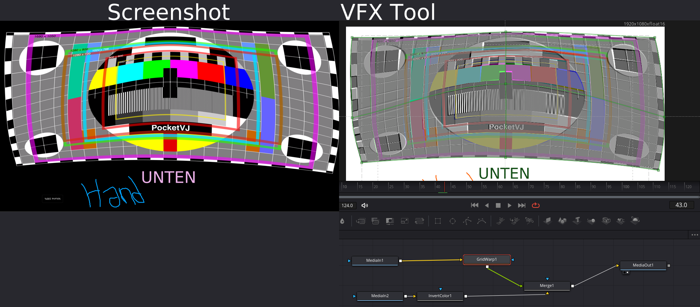
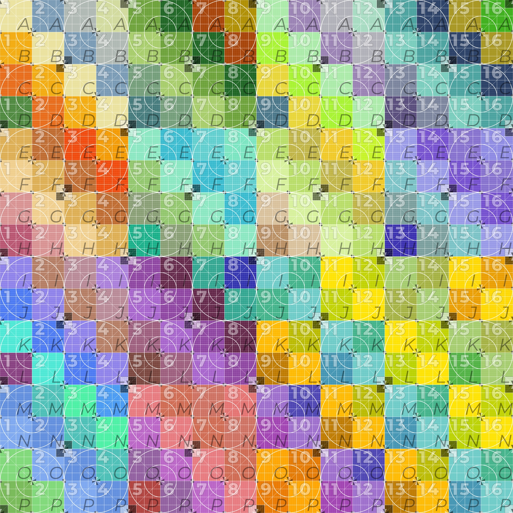

ADVANCED MAPPING TRICKS¶
With over a decade of experience in projection mapping, here some basic tricks in no particular order :-)
Create your Justage Image¶
In my opinion this is the most important step, it does make so much sense to first think about which surfaces you are going to map, how many squares or triangles you are going to need to solve this, then creating them in different colors in the same resolution as the final video will be. The same picture you will use to prepare the content.
Here an example:
Pause your Content¶
When you are mapping with the PocketVJ without a predefined adjustment image and just using your video, hit the pause button in CP to get more performance and fluent mouse movements.
Masking (1)¶
For masking just create a plain black image in your imageeditor of choice, or even simpler create a screenshot of a black area. Load this image as texture into your mapping and use the Layer Up button to bring it on top to mask off things you want to hide. Here as well, you could create a screenshot of the mapping, import this into your imageeditor, draw the mask you need in black, save this as .png with alpha transparency and layer this on top of the the mapping to hide all the things which shall be hidden.
Masking (2)¶
1.) Set your computer screen resolution the same as the projector has.
2.) Connect the projector to your computer and mirror the display, so you see your computers screen also on the projector.
2a.) You can also use VNC screen SHARING if there is no cable to the proejctor.
3.) Create a new file in Krita.org which has the same resolution as your beamer, with 72dpi.
4.) Hit TAB so Krita goes fullscreen.
5.) Use a black brush to mask everything which should not receive light.
6.) When finished hit TAB again and replace the white area with transparent.
7.) Save as .png with transparency and upload to PocketVJ.
8.) Use it as a mask.
Edit the Raw Coordinates¶
Sometimes its hard with the mouse to move the mapping to the exact position you desire or you do not have a mouse by hand. No problem, you can directly modify the coordinates of your surface in the built in texteditor.
To do so, safe your mapping, then open the eXtplorer filebrowser, navigate to /internal/mapping, open the previously saved mappersetting*.xml preset by doubleclicking.
 Now you see the coordinates of surfaces and also the texture coordinates.
Each corner has a Y and X coordinate, 0-point is on top left.
Save and then reload the mapperpreset in CP under Open Mapperset.
Map with your Mapping tool of choice¶
There are moments when you really need and advanced mapping tool with bezier curves and grid warp, or you just want to remotely map over wifi while you are standing in front of a building. (There is a good FOSS tool: https://mapmapteam.github.io)
For this purpose, VNC screen SHARING is the right choice
1.) Use a second screen or fake a second screen (e.g. with a hdmi recorder).
2.) Connect a HDMI gameplay recorder between the computer and the screen/projector. 2a.) On Win or OSX computers you need a HDCP killer as well.
3.) Do your mapping and record it in realtime.
If your computer is powerfull enough, you could also use a screenrecorder to record the second screen.
Make sure the select the right fps, when your mapping is produced in 25fps, record with 50 or 25fps.
Screen recording with ffmpeg: https://trac.ffmpeg.org/wiki/Capture/Desktop
this text need to be continued with pictures, coming on request…
Screenshot and rebuild in VFX tool¶
In some circumstances (for me basically on every long term fixed installation) its easier to play the mapped content with the video player instead of the mapper. Most of you are used to some Vfx tools like Natron, Nuke, Fusion, AfterEffects etc.
Just make your mapping in PocketVJ, when done so, load a Testscreen (https://github.com/magdesign/PocketVJ-CP-exh/raw/master/sync/testscreen.png) as image source and use the screenshot button in CP to generate a screenshot.
{kind=link}
Then transfer this screenshot from your PocketVJ to your Vfx tool and use the Warp tools to rebuild your setup.
Using Mapio or MadMapper¶
With the mentioned two softwares you are able to export an .svg file of your mapped quad, import this into the /internal/converter/ folder of your PocketVJ and use the Mapping Converter to create a Mapper preset.
Never panic¶
Never panic, sometimes you just need a coffee break, speak with someone and you get new inspiration to solve your task. Once I ended up projecting a colored UVW map onto the surface, taking a picture of it and built the animation for it Blender according the picture I took, roughly calculating the numbered UVW squares and then just had to do a few adjustments with the mapper. Sometime we used black tape or light baffles or even mirrors… sometime the used projector has a built in trapez correction which can help… there is always a way!!!
